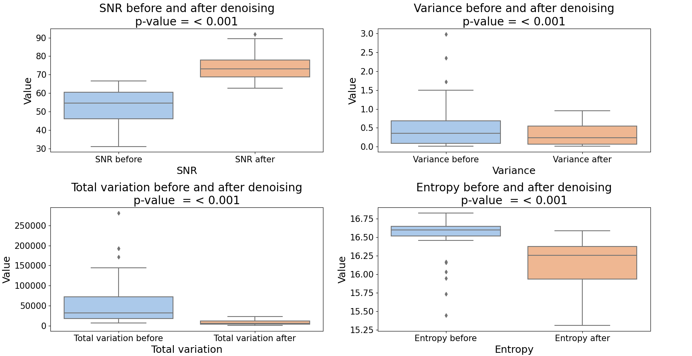
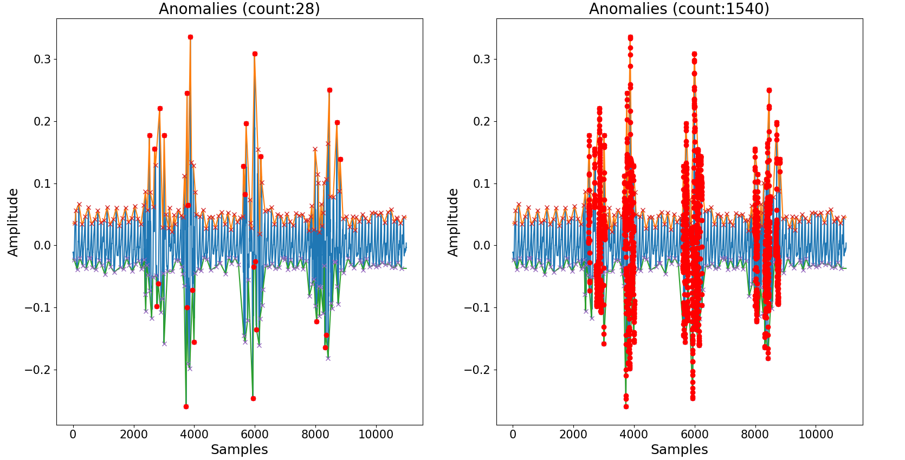
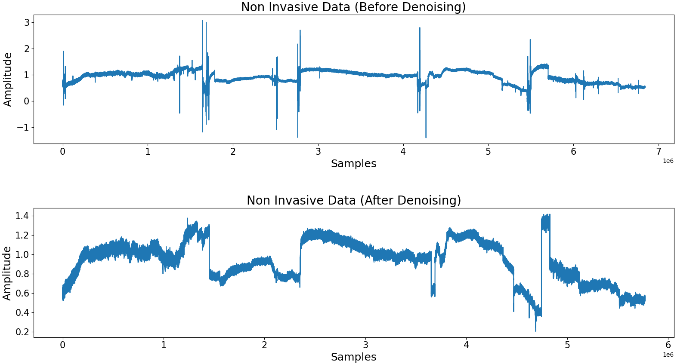

Opening the envelope: Efficient Envelope-based PPG Denoising Algorithm
The description and evaluation of a novel PPG denoising algorithm based upon the upper and lower envelopes of the signal. (Pending publication)
Project Details / Background
Photoplethysmography (PPG) signals are non-invasive, cost-effective optical signals, easily obtained from the skin’s sur-
face using a light source and photodetector which provide insights into blood volume fluctuations by monitoring
changes in light absorption or reflection. With a growing interest in non-invasive physiological monitoring and a
shift towards continuous and ubiquitous patient care, photoplethysmography has received increased interest due to
an increased focus to monitor physiological measurements non-invasively, in parallel to a shift in demand to enable
continuous and ubiquitous patient monitoring rather than exclusively in-hospital care. This trend has led to the pro-
liferation of commercial and healthcare orientated devices using photoplethysmography data.
Despite its potential, photoplethysmography signals are prone to various forms of noise, which can distort the signal and hinder reliable feature extraction. As research in this field progresses and PPG data collection becomes more prevalent, effective data pre-processing approaches are becoming increasingly crucial for retrospective and real-time analysis.
Addressing this challenge and given my core research dataset I developed and evaluated a novel PPG denoising algorithm. The approach has been shown to be efficacious in the denoising of PPG data, reporting significant differences in the Signal-to-noise ratio, Variance, Total Variation and Entropy after denoising whilst processing 70.3 minutes of data per second. The evaluation is predicated upon a dataset of 0.486 billion instances, representing approximately 81,015.99 minutes or 1350.27 hours of data collected from 31 patients. The algorithm aims to provide a simple yet effective approach to denoising whilst fostering advancements in non-invasive physiological marker monitoring and promoting the broader adoption of PPG-based healthcare technologies
Despite its potential, photoplethysmography signals are prone to various forms of noise, which can distort the signal and hinder reliable feature extraction. As research in this field progresses and PPG data collection becomes more prevalent, effective data pre-processing approaches are becoming increasingly crucial for retrospective and real-time analysis.
Addressing this challenge and given my core research dataset I developed and evaluated a novel PPG denoising algorithm. The approach has been shown to be efficacious in the denoising of PPG data, reporting significant differences in the Signal-to-noise ratio, Variance, Total Variation and Entropy after denoising whilst processing 70.3 minutes of data per second. The evaluation is predicated upon a dataset of 0.486 billion instances, representing approximately 81,015.99 minutes or 1350.27 hours of data collected from 31 patients. The algorithm aims to provide a simple yet effective approach to denoising whilst fostering advancements in non-invasive physiological marker monitoring and promoting the broader adoption of PPG-based healthcare technologies
Image Gallery

Figure with four subplots, each subplot contains 2 boxplots representing the values for the signal-to-noise ratio, variance, total variation
and entropy of the data before and denoising.

Figure with two subplots: The left subplot shows the results of the optimized anomaly detection approach (count: 28). The right subplot
displays the results of the unoptimized anomaly detection approach (count: 1540). A 5400% difference between the two approaches.

Figure with two subplots: The top subplot presents the raw data of an entire patient. The bottom subplot illustrates the denoised data.